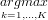

Tectonic discrimination diagrams revisited
Abstract
The decision boundaries of most tectonic discrimination diagrams are drawn by eye. Discriminant analysis is a statistically more rigorous way to determine the tectonic affinity of oceanic basalts based on their bulk-rock chemistry. This method was applied to a database of 756 oceanic basalts of known tectonic affinity (ocean island, mid-ocean ridge, or island arc). For each of these training data, up to 45 major, minor and trace elements were measured. Discriminant analysis assumes multivariate normality. If the same covariance structure is shared by all the classes (i.e., tectonic affinities), the decision boundaries are linear, hence the term linear discriminant analysis (LDA). In contrast with this, quadratic discriminant analysis (QDA) allows the classes to have different covariance structures. To solve the statistical problems associated with the constant-sum constraint of geochemical data, the training data must be transformed to log-ratio space before performing a discriminant analysis. The results can be mapped back to the compositional data space using the inverse log-ratio transformation. An exhaustive exploration of 14,190 possible ternary discrimination diagrams yields the Ti-Si-Sr system as the best linear, and the Na-Nb-Sr system as the best quadratic discrimination diagram. The best linear and quadratic discrimination diagrams using only immobile elements are Ti-V-Sc and Ti-V-Sm, respectively. As little as 5% of the training data are misclassified by these discrimination diagrams. Testing them on a second database of 182 samples that were not part of the training data yields a more reliable estimate of future performance. Although QDA misclassifies fewer training data than LDA, the opposite is generally true for the test data. Therefore, LDA is a cruder, but more robust classifier than QDA. Another advantage of LDA is that it provides a powerful way to reduce the dimensionality of the multivariate geochemical data in a similar way to principal component analysis. This procedure yields a small number of “discriminant functions”, which are linear combinations of the original variables that maximize the between-class variance relative to the within-class variance.
1 Introduction
Recovering the tectonic affinity of ancient ophiolites is a problem of great scientific interest. In addition to field data,
basalt geochemistry is another way to address this problem. Tectonic discrimination diagrams have been a popular
technique for doing this since the publication of landmark papers by Pearce and Cann (1971, 1973). This paper
revisits some of the popular discrimination diagrams that have been in use since then. Nearly all discrimination
diagrams that are currently in use were drawn by eye. The present paper revisits these diagrams in a statistically
more rigorous way.
First, a short introduction will be given to the discriminant analysis method. The fundamental difference
between the reduction in dimensionality achieved by principal components and by linear discriminant analysis will
be explained. Then, the consequences of the constant-sum constraint of geochemical data for discriminant analysis
will be discussed. In Section 4, Aitchison’s (1982, 1986) solution to this problem will be briefly explained. Section 5
revisits some of the historically most important and popular discrimination diagrams, based on a new database of
oceanic basalts of known tectonic affinity. The effect of data-closure will be taken into account and a
statistically rigorous re-evaluation of these diagrams will be made in both the linear and the quadratic
case.
This paper does not restrict itself to only those geochemical features that have already been used by previous workers. Section 6 gives an exhaustive exploration of all possible bivariate and ternary discrimination diagrams using a set of 45 major, minor, and trace elements. This will result in a list of the 100 best linear and quadratic ternary discriminators, ranked according to their success in classifying the training data. Finally, Section 7 tests the most important discrimination diagrams discussed elsewhere in the paper on a second database of oceanic basalts that were not part of the training data. This provides a more objective estimator of misclassification risk on future data than the misclassification rate of the training data. Section 7 also contains a formal comparison of the new decision boundaries with the old ones of Pearce and Cann (1973), Shervais (1982), Meschede (1986) and Wood (1980). It will be shown that the new decision boundaries perform at least as well as the old ones.
2 Discriminant analysis
Consider a dataset of a large number of N-dimensional data X, which belong to one of K classes. For example, X might be a set of geochemical data (e.g., SiO2, Al2O3,etc) from basaltic rocks of K tectonic affinities (e.g., mid ocean ridge, ocean island, island arc,...). We might ask ourselves which of these classes an unknown sample x belongs to. This question is answered by Bayes’ Rule: the decision d is the class G (1≤G≤K) that has the highest posterior probability given the data x:
|
| (1) |
where argmax stands for “argument of the maximum”, i.e. when f(k) reaches a maximum when k=d, then  f(k) = d. This posterior distribution can be calculated according to Bayes’ Theorem:
 | (2) |
where Pr(X|G) is the probability density of the data in a given class, and Pr(G) the prior probability of the class, which we will consider uniformly distributed (i.e., Pr(G=1) = Pr(G=2) = ... = Pr(G=K) = 1/K) in this paper. Therefore, plugging Equation 2 into Equation 1 reduces Bayes’ Rule to a comparison of probability density estimates. We now make the simplifying assumption of multivariate normality:
|
| (3) |
Where μk and Σk are the mean and covariance of the kth class and (x-μk)T indicates the transpose of the matrix (x-μk). Using Equation 3, and taking logarithms, Equation 1 becomes:
 | (4) |
Equation 4 is the basis for quadratic discriminant analysis (QDA). Usually, μk and Σk are not known, and must be estimated from the training data. If we make the additional assumption that all the classes share the same covariance structure (i.e., Σk = Σ ∀ k), then Equation 1 simplifies to:
 | (5) |
This is the basis of linear discriminant analysis (LDA), which has some desirable properties. For example,
because Equation 5 is linear in x, the decision boundaries between the different classes are straight lines (Figure 8).
Furthermore, LDA can lead to a significant reduction in dimensionality, in a similar way to principal component
analysis (PCA). PCA finds an orthogonal transformation B (i.e., a rotation) that transforms the centered data (X)
to orthogonality, so that the elements of the vector BX are uncorrelated. B can be calculated by an eigenvalue
decomposition of the covariance matrix Σ. The eigenvectors are orthogonal linear combinations of the original
variables, and the eigenvalues give their variances. The first few principal components generally account
for most of the variability of the data, constituting a significant reduction of dimensionality (Figure
2).
Like PCA, LDA also finds linear combinations of the original variables. However, this time, we do not want to maximize the overall variability, but find the orthogonal transformation Z = BX that maximizes the between class variance Sb relative to the within class variance Sw, where Sb is the variance of the class means of Z, and Sw is the pooled variance about the means (Figure 2).
3 The compositional data problem
One of the assumptions of discriminant analysis is that the elements of X are statistically independent from each
other, apart from the covariance structure contained in their multivariate normality. However, geochemical
data are generally expressed as parts of a whole (percent or ppm) and, therefore, are not free to vary
independently from each other. For example, in a three-component system (A+B+C=100%), increasing one
component (e.g., A) causes a decrease in the two other components (B and C). The constant-sum
constraint has several consequences, besides introducing a negative bias into correlations between
components. One of these consequences is that the arithmetic mean of compositional data has no
physical meaning (Figure 3). This is very unfortunate because some popular discrimination diagrams
(e.g., Pearce and Cann, 1973) are based on the arithmetic means of multiple samples, and it is these
averages that are published in the literature. Therefore, the discriminant analyses discussed in this paper
will not be based on these historic datasets, but will use a newly compiled database of individual
analyses.
Another statistical issue that deserves to be mentioned is spurious correlation. Bivariate plots of the form X vs. X/Y, X vs. Y/X or X/Z vs. Y/Z can show some degree of correlation, even when X, Y and Z are completely independent from each other (Figure 4). This effect was first discussed more than a century ago by Pearson (1897), and was brought to the attention of geologists more than half a century ago by Chayes (1949). Spurious correlation is an effect that should be borne in mind when interpreting discrimination diagrams like the Zr/Y-Ti/Y diagram (Pearce and Gale, 1977), the Zr/Y-Zr diagram (Pearce and Norry, 1979), or the Ti/Y-Nb/Y and K2O/Yb-Ta/Yb diagrams (Pearce, 1982). Note that whereas in Figure 4, X, Y and Z are completely independent, this is never the case for compositional data, due to the constant-sum constraint described before. This only aggravates the problem of spurious correlation.
4 Aitchison’s solution to the compositional data problem
Although Chayes (1949, 1960, 1971) made significant contributions to the compositional data problem, the real
breakthrough was made by Aitchison (1982, 1986). Aitchison argues that N-variate data constrained to a constant
sum form an N-1 dimensional sample space or simplex. An example of a simplex for N=3 is the ternary diagram
(e.g., Weltje, 2002). The very fact that it is possible to plot ternary data on a two-dimensional sheet of paper tells us
that the sample space really has only two, and not three dimensions. The “traditional” statistics of real space
(ℝN) do no longer work on the simplex (ΔN-1). Figure 5 shows the breakdown of the calculation of
100(1-α)% confidence intervals on Δ2. Treating Δ2 the same way as ℝ3 yields 95% confidence polygons
that partly fall outside the ternary diagram, corresponding to meaningless negative values of x, y and
z.
As a solution to this problem, Aitchison suggested to transform the data from ΔN-1 to ℝN-1 using the log-ratio transformation (Figure 6). After performing the desired (“traditional”) statistical analysis on the transformed data in ℝN-1, the results can then be transformed back to ΔN-1 using the inverse log-ratio transformation. For example, in the ternary system (X+Y+Z=1), we could use the transformed values V = log(X/Z) and W = log(Y/Z). Alternatively, we could also use V=log(X/Y) and W=log(Z/Y), or V=log(Y/X) and W=log(Z/X). The inverse log-ratio transformation is given by:
|
| (6) |
The back-transformed confidence regions of Figure 6 are no longer elliptical, but completely fall within the
ternary diagram, as they should. Figure 7 shows an LDA of the synthetic data of Figures 5 and 6, done the “wrong”
way (i.e., treating the simplex as a regular data space). As explained in the previous section, such
an analysis yields linear decision boundaries. 10% of the training data were misclassified. Figure 8
shows an LDA done the “correct” way (i.e., after mapping the data to log-ratio space). The decision
boundaries are still linear, but this time only ~ 3% of the training data were misclassified. Because
log(Y/Z) and log(X/Z) are rather hard quantities to interpret, it is a good idea to map the results
back to the ternary diagram using the inverse log-ratio transformation (Figure 9). The transformed
decision boundaries are no longer linear, but curved. However, the misclassification rate is still only
3%.
Note that there are two different kinds of constant-sum constraint. The first is a physical one, resulting from the fact that all chemical concentrations add up to 100%. The second is a diagrammatic contraint caused by renormalizing three chosen elements to 100% on a ternary plot. Aitchison’s logratio-transform adequately deals with both types of constant sum constraint. The first type is discussed in Sections 5.1 and 5.3, the second in 5.2.
5 Revisiting a few popular discrimination diagrams
In this section, a few historically important and popular tectonic discrimination diagrams will be discussed. They are:
- Ti-V (Shervais, 1982)
- Ti-Zr (Pearce and Cann, 1973)
- Ti-Zr-Y (Pearce and Cann, 1973)
- Zr-Y-Nb (Meschede, 1986)
- Th-Ta-Hf (Wood, 1980)
- SiO2-Al2O3-TiO2-CaO-MgO-MnO-K2O-Na2O (Pearce, 1976, but without FeO)
- Ti, Zr, Y and Sr (Butler and Woronow, 1986)
The word “discrimination diagram” is used instead of “discriminanant analysis”, because most of these diagrams are only loosely based on the principles of discriminant analysis outlined in Section 2 and the decision boundaries were drawn by eye. This section will revisit the combinations of elements used in these discrimination diagrams. An extensive dataset of 756 samples (Figure 10) was compiled from the PETDB and GEOROC databases (Lehnert et al., 2000). It contains:
- 256 Island arc basalts (IAB) from the Aeolian, Izu-Bonin, Kermadec, Kurile, Lesser Antilles, Mariana, Scotia and Tonga arcs.
- 241 Mid-ocean ridge (MORB) samples from the East Pacific rise, Mid Atlantic ridge, Indian ocean and Juan de Fuca ridge.
- 259 Ocean-island (OIB) samples from St. Helena, the Canary, Cape Verde, Caroline, Crozet, Hawaii-Emperor, Juan Fernandez, Marquesas, Mascarene, Samoan and Society islands.
All the training data had SiO2 concentrations between 45 and 53%. Duplicate analyses were excluded from the database to avoid potential bias towards overrepresented samples. From this database, two sets of training data were generated:
- 11 major oxides (in weight percent): SiO2, TiO2, Al2O3, Fe2O3, FeO, CaO, MgO, MnO, K2O, Na2O and P2O5.
- 45 major, minor and trace elements (in ppm): Si, Ti, Al, Fe(III), Fe(II), Ca, Mg, Mn, K, Na, P, La, Ce, Pr, Nd, Sm, Eu, Gd, Tb, Dy, Ho, Er, Tm, Yb, Lu, Sc, V, Cr, Co, Ni, Cu, Zn, Ga, Rb, Sr, Y, Zr, Nb, Cs, Ba, Hf, Ta, Pb, Th and U.
The data are available as an electronic appendix1 .
Not all samples were analysed for all the components. The dataset of major oxides is redundant, but a rescaling
from % to ppm is avoided by treating it separately. Being admitted to the GEOROC and PETDB databases, it was
assumed that the training data are reliable. Each datapoint in the electronic appendix is associated with a unique
ID that allows the user to recover the original publication source. Different normalization procedures were used for
different datasets, but this is unlikely to have major consequences for the discriminant analysis. So
many data sources are mixed that at most, this mixing of normalization and laboratory procedures
would have induced some additional random uncertainty, with only minor effects on the actual decision
boundaries. Mixing different data sources and normalization procedures in the training data has the
positive side-effect that the user is more or less free to use whichever normalization procedure (s)he
wishes.
First, two simple bivariate discrimination diagrams will be discussed: the Ti-V diagram of Shervais (1982) and
the Ti-Zr diagram of Pearce and Cann (1973). Many of the problems that plague the study of compositional data
and were discussed in Section 3 are far less serious in the bivariate than the ternary case. Of course, Ti and V, or Ti
and Zr are still subject to the (physical) constant-sum constraint, but considering they typically consitute less than
a few percent of the total rock composition, a change in one element will have little effect on the other one
when the raw measurement units are used on the axes of the bivariate discrimination diagrams. In
contrast with this, all popular ternary discrimination diagrams have been rescaled to a (diagrammatic)
constant sum of 100%, thus magnifying the effects of closure. For all of the following discriminant
analyses, a uniform prior was used. Statistical analysis was done with a combination of Matlab® and R
(http://www.r-project.org).
5.1 Binary discrimination diagrams
For the Ti-V system, the data were transformed to the simplex by the log-ratio transformation. Thus, two new
variables were created: log(Ti/(106-Ti-V)) and log(V/(106-Ti-V)), where 106 is the constant sum of 1 million ppm.
The discriminant analysis then proceeds as described in Section 2. The results are mapped back to bivariate Ti-V
space using the inverse log-ratio transformation (Equation 6). Figure 11 shows the results of the LDA of the Ti-V
system, whereas Figure 12 shows the QDA results. The decision boundaries look almost identical for both cases.
Besides the decision boundaries, Figures 11, 12 and subsequent figures also show the training data as well as the
posterior probabilities. One of the properties of many data mining algorithms, including discriminant analysis, is
the “garbage in, garbage out” principle: any rock that was analysed for the required elements will be
classified as either IAB, MORB or OIB, even continental basalts, granites or sandstones! Therefore, it is
recommended to treat the classification of samples plotting far outside the range of the training data with
caution.
In contrast with the Ti-V diagram, the decision boundaries of the Ti-Zr system look quite different between LDA (Figure 13) and QDA (Figure 14). The misclassification risk of the training data (i.e., the resubstitution error) of QDA is always less than that of LDA, because the former uses more parameters than the latter. However, this does not necessarily mean that QDA will perform better on future datasets. This problem will be discussed in Section 7. For now, suffice it to say that the resubstitution error can be used to compare two binary or two ternary diagrams with each other, but not to compare the performance of QDA with LDA or of a binary with a ternary diagram.
5.2 Ternary discrimination diagrams
The procedure for performing a discriminant analysis for ternary systems is very similar to the binary case. For
example, for the Ti-Zr-Y system of Pearce and Cann (1973), we first impose the constant sum constraint: x =
Y/(Ti+Zr+Y), y = Zr/(Ti+Zr+Y) and z = Ti/(Ti+Zr+Y). The log-ratio transformed variables are V
= log(x/z) and W = log(y/z). Note that this transformation only takes care of the diagrammatic
constraint x+y+z = 1. Strictly speaking, it does not account for the physical constraint Ti+Zr+Y+(all
other elements) = 100%. However, Ti+Zr+Y only amount to at most a few percent of typical basalt
compositions, thereby greatly reducing the impact of this second type of constant sum. It would be possible to
correct for the physical constraint, for example by performing a discriminant analysis on the following
three variables: log(Ti/(106-Ti-Zr-Y)), log(Zr/(106-Ti-Zr-Y)), and log(Y/(106-Ti-Zr-Y)). However, the
results of such an analysis can no longer be plotted on a ternary diagram. In practice, neglecting the
physical constant sum constraint does not severely affect the performance of the classification in this
case.
Figures 15 and 16 show the results of both LDA and QDA transformed back to the Ti-Zr-Y ternary diagram.
The raw variables of many discrimination diagrams are multiplied by constants to improve the spread of the data.
This is equivalent to adding constants to the log-ratio transformed variables. Either transformation does not affect
the discriminant analysis. As noted by Pearce and Cann (1973), the Ti-Zr-Y diagram is quite good at identifying
OIBs, but cannot distinguish MORBs from IABs. The training data of the latter substantially overlap and their
resubstitution errors are quite high. The posterior probabilies of the training data are low (<0.5 on Figure
16).
This is also the case for the Nb-Zr-Y system of Meschede (1986) (Figures 17 and 18). The high misclassification rate of both the Ti-Zr-Y and Nb-Zr-Y diagrams is largely caused by the large spread of IAB compositions, which is likely caused by the complexity of magma generation underneath island arcs, where mixing of multiple melt sources often occurs. The Th-Ta-Hf system of Wood (1980), however, achieves a much better separation between the three tectonic affinities (Figures 19 and 20). The decision boundaries of the QDA (Figure 20) are much more complicated than those of the LDA (Figure 19), without substantially improving the overall misclassification risk. Therefore, adding the extra parameters (covariances) was probably not worthwhile (see Section 7).
5.3 Multi-element discriminant function analysis
As illustrated by Figure 2, LDA offers the possibility of projecting a dataset onto a subspace of lower dimensionality. As explained in Section 2 this procedure is related to, but quite different from PCA. Therefore, it is somewhat puzzling why Butler and Woronow (1986) performed a PCA on a dataset of Zr, Ti, Y and Sr analyses of oceanic basalts. These authors were the first to note the significance of the constant sum constraint to the problem of tectonic discrimination, but they stopped short of doing a full discriminant analysis. Figure 21 does exactly that. The two linear discriminant functions (ld1 and ld2) are:
Note that the training data cluster quite well, that the clusters are of approximately equal size, and that they are well separated, resulting in a misclassification rate of only 8%.
Butler and Woronow (1986) were the first ones to note the potential importance of data-closure in the context of tectonic discimination of oceanic basalts. However, as said before, they did not use the log-ratio transformation to improve discriminant analysis, but performed a PCA instead, the implications of which are unclear. On the other hand, Pearce (1976) did perform a traditional multi-element discriminant analysis, but since his paper predated the work of Aitchison (1982, 1986), he was unaware of the effects of closure. Figure 22 shows the results of a re-analysis of the major element abundances (except FeO) used by Pearce (1976). The two linear discriminant functions are:
This discriminant analysis performs about as well as the Ti-Zr-Y-Sr diagram of Figure 21, although it uses many more elements. The benefits of multi-element LDA are clearly a decrease in misclassification rate. This comes at the expense of interpretability, because the linear discriminant functions (ld1 and ld2) have no easily interpretable meaning, in contrast with their binary and ternary counterparts.
6 An exhaustive exploration of binary and ternary discriminant analyses
Some of the popular discrimination diagrams discussed in Section 5 use a choice of elements that is based on
petrological reasons (e.g., Shervais, 1982). However, more often the reasons are entirely statistical, i.e. those features
are used that result in a “good” classification. If a database of N elements is used, there are =N(N-1)/2 possible
binary diagrams and  =N(N-1)(N-2)/6 possible ternary diagrams. For the database of 11 major oxides, this
corresponds to 55 binary and 165 ternary diagrams, whereas the database of 45 elements yields 990 binary and
14,190 ternary diagrams. To efficiently summarize the results of these thousands of discrimination diagrams, a
matrix visualization was used.
=N(N-1)(N-2)/6 possible ternary diagrams. For the database of 11 major oxides, this
corresponds to 55 binary and 165 ternary diagrams, whereas the database of 45 elements yields 990 binary and
14,190 ternary diagrams. To efficiently summarize the results of these thousands of discrimination diagrams, a
matrix visualization was used.
6.1 Binary discrimination diagrams
Figure 23 shows an example of such a visualization for all bivariate LDAs using the major oxides. Of the 756
training data, not all had been analysed for all major elements. The upper right triangular part of the matrices in
this figure show the number of analyses for which both elements were measured. Using the same color-code but a
different scale, the lower left triangular parts of the matrices show the resubstitution errors of the 55 possible
bivariate LDAs. For example, the lower left triangular matrices of Figure 23 show that only 13.5% of
IABs, 15.2% of MORBs and 7.4% of OIBs were misclassified by an LDA using TiO2 and K2O. The
overall resubstitution error is 12%. The upper right triangular parts of the same figure show that 229
out of 256 IABs, 230 out of 241 MORBs and 203 out of 259 OIBs were used for the construction of
the LDA, accounting for a total of 662 out of 756 training data. Figure 24 shows the same thing for
QDA.
Figure 25 visualizes the results of all possible bivariate LDAs for the complete dataset of 45 elements. On the
whole, Ti jumps out as the apparently best overall discriminator. One might think that the Tm-Sc diagram
performs very well, considering that the overall error (shown in the upper right triangle of the lower right matrix of
Figure 25) is only 7.7%. 12% of the IABs, 8.8% of the OIBs and only 2.4% of the MORBs in the training data were
misclassified. However, the upper right triangular matrices of the same figure show that only 101 of 756 training
data were used for the classification. Only 25/256 of the IABs, 42/241 of the MORBs and 34/259 of the OIBs were
analysed for both Tm and Sc, thereby greatly reducing the reliability of the classification. Figure 25 shows the
results of all possible bivariate QDAs for the database of 45 elements. The strikingly different colors of the lower
triangular matrices on this figure illustrate the difficulties in classifying IABs. Both MORBs and IABs are
relatively easy to separate, but the geochemical variability of IABs is much larger, for reasons discussed
before.
6.2 Ternary discrimination diagrams
As calculated in the previous section, there are 990 ways to choose three out of 11 major oxides, and 14,190 ways to
choose three out of 45 major, minor and trace elements. Although all these possibilities were explored in the
framework of this research, it is not practical to visually show all the results in this paper, even using the highly
compact matrix visualization. Therefore, only an (important) subset is shown of all ternary diagrams using Ti. As
discussed before, many of the most effective bivariate discriminant analyses use Ti. In addition to being an excellent
discriminator, Ti is also highly immobile, in contrast with for example Sr, which is another powerful discriminator.
For these reasons, only the results of ternary LDAs and QDAs using Ti are shown in Figures 27, 28, 29 and
30.
The resubstitution errors of all 14,190 ternary LDAs (i.e., not only those using Ti) were ranked to find the best
combinations of elements. Table 1 shows the 100 best LDAs. Only those diagrams for which at least 100 IABs, 100
MORBs and 100 OIBs of the training data had been analysed for all three elements were used. 2,333 out of 14,190
possible combinations fulfilled this requirement. The best ternary LDA uses the Si-Ti-Sr system. It has an overall
resubstitution error of 6.2%, (2.7% for IABs, 2.8% for MORBs and 2.7% for OIBs), using nearly all the training
data (221/256 IABs, 211/241 MORBs and 192/259 OIBs). Figure 31 shows the Si-Ti-Sr LDA in detail.
Another powerful ternary diagram using minor and trace elements is the Eu-Lu-Sr system, which
ranks third among all the ternary LDAs of Table 1. This diagram is shown on Figure 32. Many if
not most of the best performing ternary LDAs use Sr as one of the elements. However, as discussed
before, Sr is quite mobile during processes of alteration and metamorphism, potentially affecting the
reliability of the discrimination diagrams using it. The Ti-V-Sc diagram, ranking 28th in Table 1, suffers
much less from this problem and still has an overall misclassification rate of only 10.4% while using
374 out of 756 training data. Figure 33 shows the Ti-V-Sc diagram in detail. Table 2 lists the best
performing (lowest resubstitution error) ternary LDAs, using the following 25 incompatible elements: Ti,
La, Ce, Pr, Nd, Sm, Gd, Tb, Dy, Ho, Er, Tm, Yb, Lu, Sc, V, Cr, Y, Zr, Nb, Hf, Ta, Pb, Th, and
U.
Table 3 shows the 100 best-performing ternary QDAs. The Na-Nb-Sr system performs the best, with an overall resubstitution error of only 5%. As shown on Figure 34, this diagram misclassifies only 22 out of 425 training samples. However, Na is a very mobile element and not much faith can be had in a classification that uses it for basalt samples that are not perfectly fresh. The Ti-V-Sm diagram (Figure 35) is the best-performing QDA using only relatively immobile elements. It is ranked 33rd in Table 3. Notice that both for LDA and QDA, the best-performing ternary discrimination diagrams using immobile elements contain both Ti and V, apparently confirming the effectiveness of the approach used by Shervais (1982). The latter author selected Ti and V for mostly petrological reasons, while the present paper arrived at the same elements using an entirely statistical method. The compatibility of both approaches lends more credibility to the results. Table 4 lists the best performing QDAs using ternary combinations of the 25 incompatible elements listed in the previous paragraph for which at least 100 training samples of each tectonic affinity were represented.
7 Testing the results
Some of the discrimination diagrams of the previous section were extremely good at classifying the training data.
However, as briefly mentioned in Section 5, the resubstitution error is not the best way to assess performance on
future data. Furthermore, QDA nearly always performed better than LDA, because the former involves more
parameters than the latter. As the number of parameters in a model increases, its ability to resolve even the smallest
subtleties in the training data improves. In a regression context, this would correspond to adding terms to a
polynomial interpolator (Figure 36). For a very large number of parameters (equaling or exceeding the
number of datapoints), the curve will eventually pass through all the points and the “error” (e.g.,
squared distance) will become zero. In other words, the high order polynomial model has zero bias.
However, unbiased models rarely are the best predictive models, because they suffer from high variance.
High-order polynomial models built on different sets of training data are likely to look significantly different
because of irreproducible random variations in the sampling or measuring process. On the other hand, a
one-parameter linear model will have low variance, but can be very biased (e.g., when the true model is
really polynomial). This phenomenon is called the bias-variance tradeoff, and exists for all data mining
methods.
By assuming equal covariance between the different classes of the training data, LDA is a very crude
approximation of the data space. Therefore, it is likely to be quite biased in many cases. However, because of the
bias-variance tradeoff, the variance of the LDAs described in previous sections is low. Therefore, the resubstitution
error might actually be a decent estimator of future performance. However, things are different for QDA because it
estimates the covariance of each of the classes from the training data, thereby dramatically increasing the number of
parameters in the model. Although this reduces the bias (i.e., a QDA describes the training data better than
an LDA), it causes an increased variance. For example, some of the intricate structure of Figures 16
or 20 might not be very stable. Therefore, the resubstution error is not a good predictor of future
performance. It must also not be used for comparing the performances of bivariate and ternary discrimination
diagrams.
The easiest way to obtain a more objective estimate of future performance is to use a second database of test data, which had not been used for the construction of the discrimination diagrams. Implementing this idea, a database of 182 test data was compiled from three locations:
- 67 IABs from the Aleutian arc.
- 55 MORBs from the Galapagos ridge.
- 60 OIBs from the Pitcairn islands.
All previously discussed discrimination diagrams are represented in the error-analysis of Table 5. The left part of the table shows the resubstitution errors, while the right side shows the performance on the test-data. Figures 37 - 46 show the test data plotted on the binary and ternary discrimination diagrams. The new decision boundaries are shown in both log-ratio space and conventional compositional data space. As explained in Section 2, the decision boundaries are linear for LDA in log-ratio space. To allow an easy reproduction of these decision boundaries, four “anchor points” are provided for each LDA in Figure 21, 22, 37 - 46 and Table 6. Figures 37 - 41 and Table 7 allow a direct comparison of the decision boundaries of Shervais (1982), Pearce and Cann (1976), Meschede (1986) and Wood (1980) with the new decision boundaries constructed using LDA and QDA. Although it is hard to make a definite comparison due to the relatively small size of the effectively used test dataset, the new decision boundaries seem to always perform at least as well as the old ones. Because the test dataset is much smaller than the training dataset, it is more likely affected by the missing-data problem. For example, the test data contained no MORBs that had been simultaneously analysed for Th, Ta and Hf. For all the discrimination diagrams of Table 5, QDA performs better than LDA on the training data. On the other hand, LDA often performs better than QDA on the test data because of its lower variance. For example, LDA misclassified 17 out of 85 test samples using Ti, Zr and Y, whereas QDA misclassified 38 using the same three elements (Table 5). However, in most cases the difference is not so dramatic.
8 Conclusions
This paper revisited the observation by Butler and Woronow (1986) that traditional statistical analyses of
geochemical data is flawed because it ignores the effects of data-closure. Since the work of Aichison (1982,
1986), it is possible to account and correct for the constant-sum constraint by transforming the data to
log-ratio space. Butler and Woronow (1986) then went on to do a principal component analysis. The
present paper instead uses the log-ratio method for the related, albeit different technique of discriminant
analysis.
First, a number of popular discrimination diagrams were revisited. Many of these historically important
diagrams were not derived from a real discriminant analysis sensu Fisher (1936), but were instead obtained by
drawing decision boundaries by eye. A positive side-effect of this is that the resulting diagrams are much less
affected by the constant-sum constraint discussed before. A negative consequence remains, however, that all
statistical rigor is lost. Nevertheless, it is not the intention of this paper to discredit the discriminantion diagrams of
Pearce and Cann (1973), Wood (1980), Shervais (1982), Meschede (1986) and others. Rather, the paper merely
explains how to perform discriminant analysis of geochemical data in a statistically more rigorous
manner.
After revisiting these historically important discrimination diagrams, an exhaustive exploration was done of all
possible linear and quadratic discriminant analyses using a dataset of 756 IABs, MORBs and OIBs. The best overall
performance was given by the Si-Ti-Sr (LDA) and Na-Nb-Sr (QDA) systems. The best LDA and QDA using only
immobile elements are the Ti-V-Sc and Ti-V-Sm systems, respectively. One of the features of the old discrimination
diagrams was a field of “not classifiable” compositions. If an unkown sample plotted outside the pre-defined fields
tectonic affinity fields, it would be labeled as “other”. The revisited discriminant analyses discussed
above do not have this feature. On the one hand, it might be considered a positive thing that the
method no longer “breaks down” when encountering “difficult” samples. On the other hand, one might
wonder what would happen if we were to plot a rock of very different affinity on the discrimination
diagrams. To mitigate this “garbage in, garbage out” effect, we might want to opt for a hybrid solution,
and only accept results for data that plot inside the old (hand-drawn) affinity fields, or within the
clouds of training data shown on all discrimination diagrams in this paper (Figures 11 - 22 and 31 -
35).
Historically, discrimination diagrams and discriminant analysis have been the method of choice for geochemists to statistically classify rocks of different environments. However, discriminant analysis is not the only “data mining” method that can be used for this purpose. For examples, Vermeesch (in press) introduces classification trees as a potentially very useful tool for tectonic classification. Some of the advantages of classification trees over discriminant analysis are that the former (a) do not make any distributional assumptions, (b) can handle an unlimited number of geochemical species, isotopic ratios or other features, while still being easily interpretable as a two-dimensional graph and (c) can still be used if some of these features are not available. Two trees were constructed using the same training data as in the present paper: one tree using 51 elements and isotopic ratios and one using only 23 High Field Strength (HFS) elements and isotopic ratios. Both trees were evaluated with the same test data used on the discrimination diagrams. The full tree misclassifies 23 and the HFS tree 41 out of the 182 test data. Presently, the Si-Ti-Sr and Eu-Lu-Sr LDAs, and the Na-Nb-Sr and Ti-V-Sm QDAs introduced in this paper still outperform the trees of Vermeesch (in press). However, this is likely to change for trees created from a larger training set. Whereas discriminant analysis does not gain much from using exceedingly large training sets, classification trees continue to improve with growing sets of training data. Furthermore, the classification trees succeeded in classifying all 182 test data, even for samples missing several geochemical features. None of the discrimination diagrams achieved this. Therefore, it is probably a good idea to use a combination of both methods.
Acknowledgments
Many thanks to Cameron Snow for proof-reading the first draft of this paper. Careful reviews by Nick Arndt, Geoff Fitton and particularly John Rudge are gratefully acknowledged.
References
- Aitchison, J., 1982, The statistical analysis of compositional data: Journal of the Royal Statistical Society, v. 44, p. 139-177.
- Aitchison, J., 1986, The statistical analysis of compositional data: London, Chapman and Hall, 416 p.
- Butler, R., and Woronow, A., 1986, Discrimination among tectonic settings using trace element abundances of basalts: Journal of Geophysical Research, v. 91, p. 10,289-10,300.
- Chayes, F., 1949, On ratio correlation in petrography: Journal of Geology, v. 57, no. 3, p. 239-254.
- Chayes, F., 1960, On correlation between variables of constant sum: Journal of Geophysical Research, v. 65, p. 4185-4193.
- Chayes, F., 1971, Ratio correlation; a manual for students of petrology and geochemistry, Chicago University Press, 99 p.
- Fisher, R. A., 1936, The use of multiple measurements in taxonomic problems: Annals of Eugenics, v. 7, p. 179-188.
- Lehnert, K., Su, Y, Langmuir, C.H., Sarbas, B. and Nohl, U., 2000, A global geochemical database structure for rocks: Geochemistry, Geophysics, Geosystems, v. 1, n. 5, doi:10.1029/1999GC000026.
- Meschede, M., 1986, A method of discriminating between different types of mid-ocean ridge basalts and continental tholeiites with the Nb-Zr-Y diagram: Chemical Geology, v. 56, p. 207-218.
- Pearce, J. A., 1976, Statistical analysis of major element patterns in basalts: Journal of Petrology, v. 17, no. 1, p. 15-43.
- Pearce, J. A., 1982, Trace element characteristics of lavas from destructive plate boundaries. In: Thorpe, R. S., ed., Andesites: Chichester, Wiley, p. 525-548.
- Pearce, J. A., and Cann, J. R., 1971, Ophiolite origin investigated by discriminant analysis using Ti, Zr and Y: Earth and Planetary Science Letters, v. 12, no. 3, p. 339-349.
- Pearce, J. A., and Cann, J. R., 1973, Tectonic setting of basic volcanic rocks determined using trace element analyses: Earth and Planetary Science Letters, v. 19, no. 2, p. 290-300.
- Pearce, J. A., and Gale, G. H., 1977, Identification of ore-deposition environment from trace element geochemistry of associated igneous host rocks: Geological Society Special Publications, v. 7, p. 14-24.
- Pearce, J. A., and Norry, M. J., 1979, Petrogenetic implications of Ti, Zr, Y and Nb variations in volcanic rocks: Contributions to Mineralogy and Petrology, v. 69, p. 33-47.
- Pearson, K., 1897, On a form of spurious correlation which may arise when indices are used in the measurement of organs: Proceedings of the Royal Society of London, v. 60, p. 489-502.
- Shervais, J. W., 1982, Ti-V plots and the petrogenesis of modern ophiolitic lavas: Earth and Planetary Science Letters, v. 59, p. 101-118.
- Vermeesch, P., in press, Tectonic discrimination with classification trees: Geochimica et Cosmochimica Acta.
- Weltje, G. J., 2002, Quantitative analysis of detrital modes; statistically rigorous confidence regions in ternary diagrams and their use in sedimentary petrology: Earth-Science Reviews, v. 57, no. 3-4, p. 211-253.
- Wood, D. A., 1980, The application of a Th-Hf-Ta diagram to problems of tectonomagmatic classification and to establishing the nature of crustal contamination of basaltic lavas of the British Tertiary volcanic province: Earth and Planetary Science Letters, v. 50, no. 1, p. 11-30.
List of Figures
2 The difference between PCA and LDA
3 The consequences of the constant-sum constraint
4 Spurious correlation of ratios
5 The dangers of using “traditional” statistics on the simplex
6 Mapping compositional data from Δ2 to ℝ2
7 Linear discriminant analysis done the wrong way
8 Linear discriminant analysis done the right way
9 Results of the linear discriminant analysis mapped back to the simplex
10 Geographical locations of the training data
11 Linear discriminant analysis of the Ti-V system of Shervais (1982)
12 Quadratic discriminant analysis of the Ti-V system
13 Linear discriminant analysis of the Ti-Zr system of Pearce and Cann (1973)
14 Quadratic discriminant analysis of the Ti-Zr system
15 Linear discriminant analysis of the Ti-Zr-Y system of Pearce and Cann (1973)
16 Quadratic discriminant analysis of the Ti-Zr-Y system
17 Linear discriminant analysis of the Zr-Y-Nb system of Meschede (1986)
18 Quadratic discriminant analysis of the Zr-Y-Nb system
19 Linear discriminant analysis of the Th-Ta-Hf system of Wood (1980)
20 Quadratic discriminant analysis of the Th-Ta-Hf system
21 Linear discriminant analysis using Ti, Zr, Y and Sr
22 Linear discriminant analysis using major element data
23 Exhaustive exploration of all bivariate linear discriminant analyses using only major elements
24 Same as Figure 23Figuresfigure.1, but for quadratic discriminant analysis
25 Matrices showing the performance of all possible bivariate discriminant analyses using combinations of 45 elements
26 Same as Figure 25Figuresfigure.1, but for quadratic discriminant analysis
27 Performance analysis of all possible ternary discriminant analyses using TiO2 and other major element oxides
28 Same as Figure 27Figuresfigure.1, but using quadratic discriminant analysis
29 Performance analysis of all possible ternary discriminant analyses using Ti and other elements
30 Same as Figure 29Figuresfigure.1, but using quadratic discriminant analysis
31 Best ternary linear discriminant analysis (using Si, Ti, and Sr)
32 Linear discriminant analysis using Eu, Lu, and Sr
33 Linear discriminant analysis using Ti, V and Sc
34 Quadratic discriminant analysis using Na, Nb and Sr
35 Quadratic discriminant analysis using Ti, V and Sm
36 Illustration of the bias-variance tradeoff in a regression context
37 The test data plotted on various versions of the Ti-V diagram
38 The test data plotted on the Ti-Zr diagram
39 The test data plotted on the Ti-Zr-Y diagram
40 The test data plotted on the Nb-Zr-Y diagram
41 The test data plotted on the Th-Ta-Hf diagram
42 The test data plotted on the Si-Ti-Sr diagram
43 The test data plotted on the Eu-Lu-Sr diagram
44 The test data plotted on the Ti-V-Sc diagram
45 The test data plotted on the Na-Nb-Sr diagram
46 The test data plotted on the Ti-V-Sm diagram
Figures


{kind=link}


a.
b. c.
c.
d.
e.
a. 
b.  c.
c. 
d. e.
a.
b. c. 
d.  e.
e.
a.
b. c. 
d. e. 
a. 
b. c. 
d. e.
a. b.
a. b.
a.  b.
b. 
a.  b.
b. 
a.  b.
b. 
List of Tables
- The 100 best ternary linear discrimination diagrams
- The best ternary linear discrimination diagrams using only incompatible elements
- The 100 best ternary quadratic discrimination diagrams
- The best ternary quadratic discrimination diagrams using only incompatible elements
- Misclassification estimates
- Anchor points for selected linear discriminant analyses.
- Comparison between the old and new decision boundaries
Tables
| ||||||||||||||||||||||||||||||||||||||||||||||||||||||||||||||||||||||||||||||||||||||||||||||||||||||||||||||||||||||||||||||||||||||||||||||||||||||||||||||||||||||||||||||||||||||||||||||||||||||||||||||||||||||||||||||||||||||||||||||||||||||||||||||||||||||||||||||||||||||||||||||||||||||||||||||||||||||||||||||||||||||||||||||||||||||||||||||||||||||||||||||||||||||||||||||||||||||||||||||||||||||||||||||||||||||||||||||||||||||||||||||||||||||||||||||||||||||||||||||||||||||||||||||||||||||||||||||||||||||||||||||||||||||||||||||||||||||||||||||||||||||||||||||||||||||||||||||||||||||||||||||||||||||||
| |||||||||||||||||||||||||||||||||||||||||||||||||||||||||||||||||||||||||||||||||||||||||||||||||||||||||||||||||||||||||||||||||||||||||||||||||||||||||||||||||||||||||||||||||||||||||||||||||||||||||||||||||||||||||||||||||||||||||||||||||||||||||||||||||||||||||||||||||||||||||||||||||||||||||||||||||||||||||||||||||||||||||||||||||||||||||||||||||||||||||||||||||||||||||||||||||||||||||||||||||||||||||||||||||||||||||||||||||||||||||||||||||||||||||||||||||||||||||||||||||||||||||||||||||||||||||||||||||||||||||||||||||||||||||||||||||||||||||||||||||||||||||||||||||||||||||||||||||||||||||||||||||||||||||||||||||||||||||||||||||||||||||||||||||||||||||||||||||||||||||||||||||||||||||||||||||||||||||||||||||||||||||||||||||||||||||||||||||||||||||||||||||||||||||||||||||||||||||||||||||||||||||||||||||||||||||||||||||||||||||||||||||||||||||||||||||||||||||||||||||||||||||||||||||||||||||||||||||||||||||||||||||||||||||||||||||||||||||||||||||||||||||||||||||||||||||||||||||||||||
| |||||||||||||||||||||||||||||||||||||||||||||||||||||||||||||||||||||||||||||||||||||||||||||||||||||||||||||||||||||||||||||||||||||||||||||||||||||||||||||||||||||||||||||||||||||||||||||||||||||||||||||||||||||||||||||||||||||||||||||||||||||||||||||||||||||||||||||||||||||||||||||||||||||||||||||||||||||||||||||||||||||||||||||||||||||||||||||||||||||||||||||||||||||||||||||||||||||||||||||||||||||||||||||||||||||||||||||||||||||||||||||||||||||||||||||||||||||||||||||||||||||||||||||||||||||||||||||||||||||||||||||||||||||||||||||||||||||||||||||||||||||||||||||||||||||||||||||||||||||||||||||||||||||||||||||||||||||||||||||||||||||||||||||||||||||||||||||||
| |||||||||||||||||||||||||||||||||||||||||||||||||||||||||||||||||||||||||||||||||||||||||||||||||||||||||||||||||||||||||||||||||||||||||||||||||||||||||||||||||||||||||||||||||||||||||||||||||||||||||||||||||||||||||||||||||||||||||||||||||||||||||||||||||||||||||||||||||||||||||||||||||||||||||||||||||||||||||||||||||||||||||||||||||||||||||||||||||||||||||||||||||||||||||||||||||||||||||||||||||||||||||||||||||||||||||||||||||||||||||||||||||||||||||||||||||||||||||||||||||||||||||||||||||
|
| ||||||||||||||||||||||||||||||||||||||||||||||||||||||||||||||||||||||||||||||||||||||||||||||||||||||||||||||||||||||||||||||||||||||||||||||||||||||||||||||||||||||||||||||||||||||||||||||||||||||||||||||||||||||||||||||||||||||||||||||||||||||||||